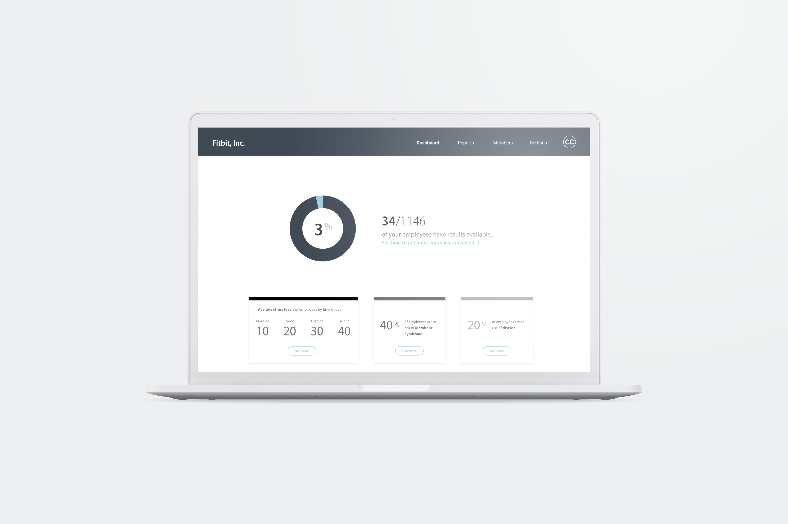
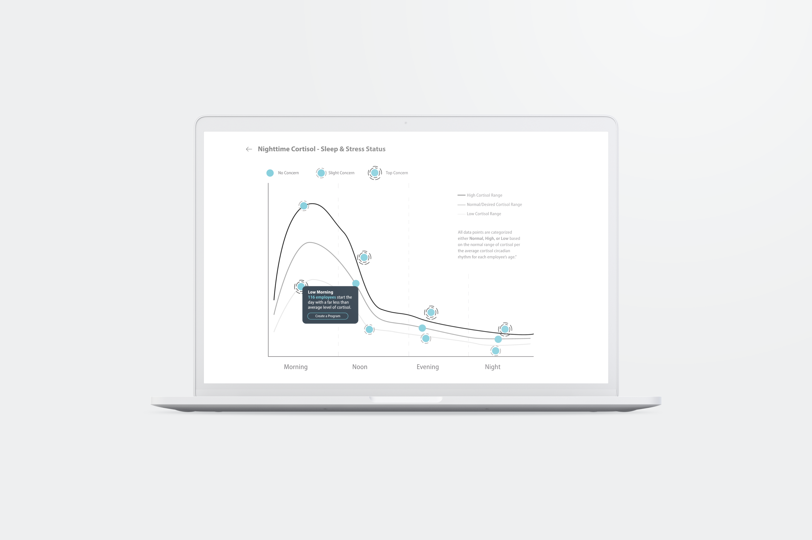

Healthstate
UX + PROTOTYPING
SUMMER 2019, Graphic Design Internship at ConfirmBiosciences
TEAM: Creative team at ConfirmBiosciences and HealthState
HealthState is a platform in which companies can track the health and wellness of their employees through questionnaires and HealthConfirm's at-home test kits. Initially, the potential for the platform was identified through the lack of use of HealthConfirm’s company health benefits such as discount gym memberships, exercise classes, FitBits, etc. Out of frustration, the HR department had a conversation with the team I was on, sparking the idea for this platform. Interviews with company employees identified the pain points of a generalized health benefit plan. The data showed diverse health needs and the need for a more accommodating, individualized health benefit plan.
There are many components to HealthState that were difficult to combine together without a thorough understanding of the relationships between each step. This platform needed to allow companies to communicate with employees and track their well-being, be connected to HealthConfirm testing kits and participating labs, and synthesize lab results into digestible bits of information for employees and employers. After sketching, storyboarding, multiple iterations, and feedback from various stakeholders, I was able to create the mock up below in Adobe XD.
After my internship had ended, I passed off my work to my team. They used my mock up as a foundation to continue the project and create high-fidelity versions. HealthState is in its final stages of development and is being tested by a number of private companies in San Diego. It is expected to bring in $20 million into ConfirmBiosciences by the end of 2021. I would like to thank the HealthState team and ConfirmBiosciences for giving me the opportunity to help spearhead a new platform that will revolutionize employees' experiences in their respective places of work.
Visit the website below to see the full mock up.
DASHBOARD
REPORTS
